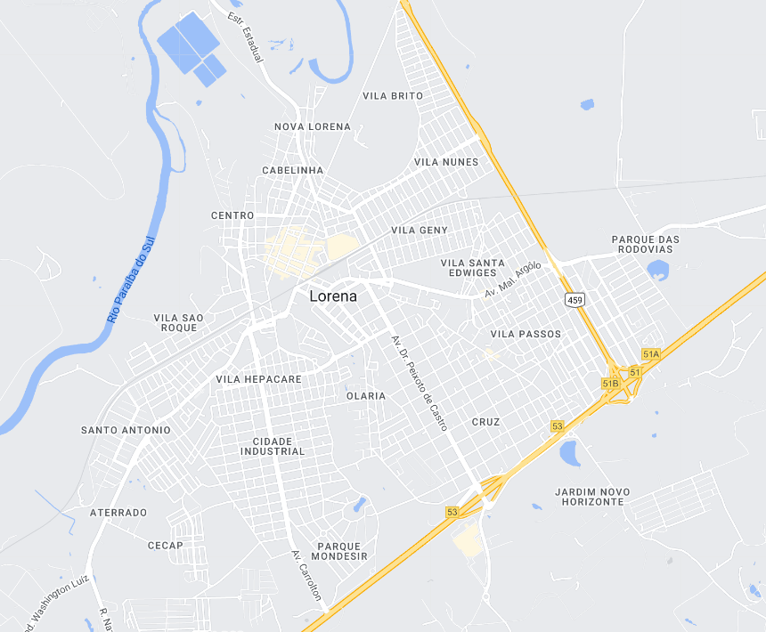
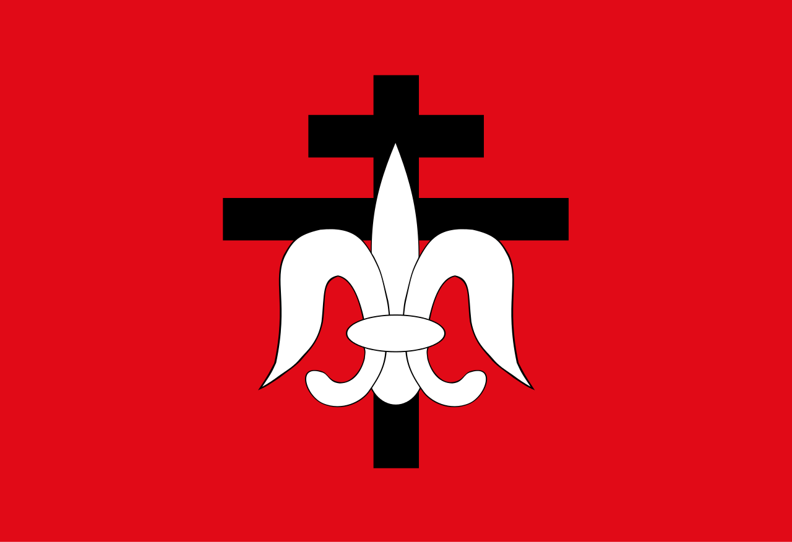

Lorena - Geodex


Município de Lorena
-
Populacão: 83.532
-
Área: 414,160km²
-
Fundação: 15 de Agosto de 1788
-
Distância da Capital: 188km
Lorena é uma cidade localizada no estado de São Paulo, Brasil. Fundada em 1788, teve sua origem ligada à expansão bandeirante na região. Ao longo de sua história, foi influenciada pelo ciclo do café, que impulsionou seu crescimento econômico e desenvolvimento urbano. Atualmente, Lorena é conhecida por sua rica herança cultural, com destaque para a arquitetura histórica, festas tradicionais e a presença de instituições de ensino renomadas, como a Universidade de São Paulo (USP) e o Instituto Tecnológico de Aeronáutica (ITA).